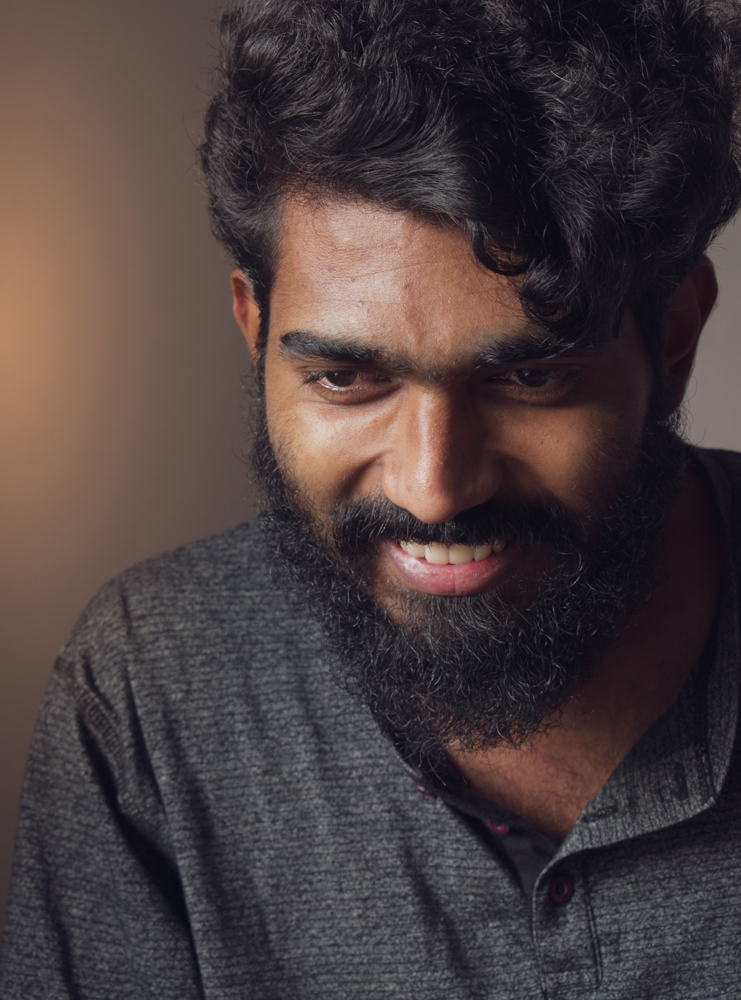

Nimantha SandaruwanA guide who reads the whole island, not just the postcard
Seven years of walking Sri Lanka's hill country, rainforests, and ancient sites with travellers from 22 countries, in English, German, French, Spanish, and native Sinhala.

Grown up between a rock temple and a spice garden
I grew up in Matale, in the central hills of Sri Lanka, a town that shaped how I still read this island today. It was here, at the Aluvihare Rock Temple, that Buddhist monks first set the Tripitaka down in writing, on palm leaf, in the first century BCE. A short walk from where I learned to ride a bicycle.
The valleys around Matale are lined with cinnamon, cardamom, and pepper, the same spice roads that once drew traders from Rome, Arabia, and China to this coast. Growing up between a temple carved into rock and a garden that predates the country's currency taught me that Sri Lanka's story has layers, and a good guide should read all of them, not only the ones on the postcard.
I have spent the last seven years turning that upbringing into a job: planning routes, reading weather over the hill country, and translating the island for guests who arrive knowing very little and leave able to name the difference between a Kandyan and a low country temple roof.
Languages spoken
Off the trail
Sri Lanka rewards guests who ask what a building is made of, not only what it looks like.
I have had the pleasure of guiding guests from 22 countries across six continents, from first-time visitors to returning families.
Seven years, a few stories worth telling
First sunrise
Weeks after finishing my guide certification, I led a family from Munich up Adam's Peak for their first sunrise. I have not forgotten how quiet the summit went when the light hit the cloud line below us.
Mapping the Knuckles
With the island closed to visitors, I spent those two years walking every ridge trail in the Knuckles Range on foot, building routes that guests still follow today.
Three days in Sinharaja
Guided a photographer through the rainforest tracking a shy troop of purple faced langurs, and one very lucky sighting of a Sri Lanka blue magpie on the last morning.
Coast to coast
An eighteen day loop from Colombo to Jaffna and back for a couple from Spain, still the longest single tour I have run start to finish.
Three nights in Wilpattu
Camped beside the park boundary with a family from Australia, reading leopard pugmarks each morning before the safari jeep left.
Teaching what I know
Invited to guest lecture on community based tourism at a college in Colombo, the first time I put seven years of route notes into a syllabus.
Twenty two and counting
Welcomed a guest from China this year, the 22nd country on the list, while road testing new hill country routes for next season.
Transport matched to the road, not the other way round
A few frames from recent trips


What guests say after the trip, not just after the sunset
Nimantha planned our nine days around the hill country rain, not around a fixed itinerary. We ended up in Ella two days early and it made the whole trip better.
He speaks German better than most guides speak English, and he actually knows the history behind every temple, not just the entrance fee.
Three nights camping near Wilpattu with two kids under ten. Patient, sharp eyed, and he never once made us feel like we were slowing him down.
Let's plan the trip properly
Tell me your dates, who is travelling, and what you want more of, hill country, wildlife, temples, or food, and I will put together a route that fits.